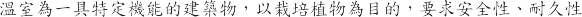
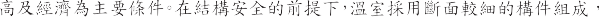
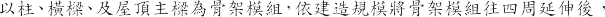
1. 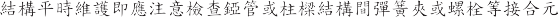
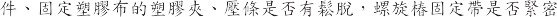
2. 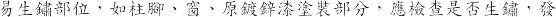
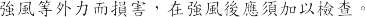
1. 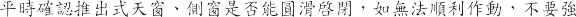
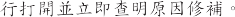
2. 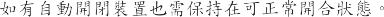
3.
4. 
5.
6.
1. 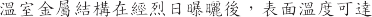 60~70
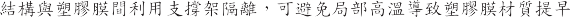
2. 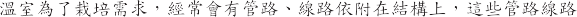
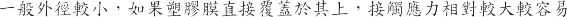
3.
4. 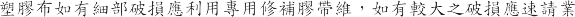
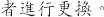
5. 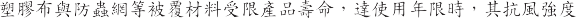
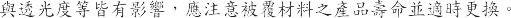
6. 塑膠布及防蟲綱平時應注意壓條或塑膠管夾是否有鬆脫。
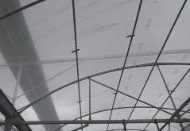
癢及防颱措泥防颱虞理
圖 6-1
塑膠膜利用支撐架隔離。
温室經由上述之原則搭建後於颱風時仍有毀壞的憂慮，於颱風時須正哦掌握氣象資訊，迅速執行防颱措砲處理。對不同温室條件狀況，防颱處理可有下列之措泥：
檢查塑膠布是否有破裂或鬆動之情況，並利用塑膠夾、壓條盡量加強塑膠布的緊固，特別於兩端山牆面附近，提高温室氣密性。若有破損立即以專用修補塑膠布補修，如有超過使用年限之屋項膠膜被瞿(PEP等)，建議於颱風季前更換或考慮割破移除，以保護温室結構。
檢查錏管間彈簧夾等接合元件丶固定塑膠布的塑膠夾、壓條是否有鬆脫，地錨或螺旋椿固定帶是否緊密固定。
出入口、捲捅（側捲捅、水牆捲捅等）、天窗等活動裝置應適時補強
並確實緊密關閉固定。
結構型温室如有外遮光設備應保持於收緊（不遮光）的狀態，但不需固定，以減少強風破壞的可能。
有預備斜撐丶補強支柱時，於颱風警報發布後立即加以施作補強。
温室山牆面附近受風力較大，容易產生結構破壞或塑膠布破損，可利
用防蟲綱瞿蓋方式( 約2～3 m)補強。温室長度較大，同樣可以適當間
隔瞿蓋防蟲綱(覆蓋面積愈大，效果愈佳)，可減緩塑膠部受風力，防止塑膠布拍打損壞，也有緊固捲捅裝置的效能。
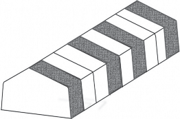
圖 6-2
使用防蟲網間隔農蓋温室塑膠膜。
I
清掃溫室周邊環境，不致使強風吹襲之木片、樹枝，小石頭等破壞被農塑膠布，周圍可移動物件應確實移除或固定。
水槽、及周邊排水溝雜物的清除，順暢排水處理。溫室基礎周圍積水，
基礎土壤容易產生鬆動，強風下有產生基礎位移、下陷的現象，降低溫室的抗風性。
溫室設有山牆面風扇的情況，在強風時可以每分地為單位作動 1 紐風
扇，減緩室內的氣壓(形成負壓。)
風速減弱後，即以關閉，以免因負
壓造成雨水滲入温室。但山牆面風扇如適處於迎風面狀態應避免開啟作動，以保護風扇免受颱風破壞。
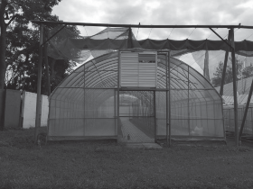
圖 6-3 設有山牆面風扇之温室。
如有備用電力系統要確實檢查是否正當，檢查時手動啟動運轉負載至
少達 15 分鐘以上。另其發電機用油應有一天以上的儲備量。
強風後，立即檢查設泥塑膠布、固定元件是否有破損、鬆脫之情況，必要時須迅速加以補修。
將風拉桿保持適當鎖固(轉緊後回鬆 1/2 圈)，強風後檢查風拉桿是否斷
裂，並回復風拉桿鬆緊度。
經以上補強與防颱措施作後，温室仍有遭受破壞的可能，破壞過程為人力無法補救處理時應盡速與廠商回報維修。在颱風通過期間，絕對禁止人員進入温室內，避免温室破壞時造成人員傷害。在經歷颱風前後可參酌表 6-1 及 6-2之颱風前後檢核表確認防颱措施。
地震是理
溫室屬於輕結構建物，一般而言地震並不會對於溫室造成太大影零，惟地震後仍須注意以下幾點：
地震後維認主結構之鈸片、樑柱是否變形、元件焊道是否斷裂、銅索鏈接及風拉桿部分是否有斷裂。
基礎是否有偏移或下沉，必要時須迅速加以補修。
表 6-1
颱風前檢核表
項次 | 項目 | 是/否 |
1 | 錏管間彈簧夾等接合元件丶固定塑膠布的塑膠夾、壓條 是否有鬆脫。 |
1 螺旋椿固 定帶是 否緊 密固 定。

1 出 入口 、 捲捲等活動 裝置是 否維 實緊密 固 定。
4 | 温室出入口丶窗、捲捲（側捲捲、水牆捲捲等）是否哦 實閉合或放下。 |
1 外遮 光設備是否保 持於收緊（ 不遮 光）。

1 天溝及周邊排水溝的雜物是否 清除。
7 | 溫室周邊環境是否清掃完成，周邊之可移動物件是否移 除或固定。 | |
8 | 塑膠布是否有破裂或鬆動。 | |
9 | 塑膠布是否以塑膠夾、壓條完成緊固，由其於兩端山牆 面附近。 |
1 如有預備斜撐丶補 強支柱時， 是否加 以方色 作補強。
1 可於溫室 塑膠布外圍 適當間隔覆蓋防蟲綱。
12 | 如有備用電力系統，確實檢查是否正常，其發電機用油 是否有一天以上之儲備量。 |
表6-2
颱風後檢核表

項 次 I 項 目 I 是 否/
1 博認主結構是否完好，是否因強風產生玻壞。
2 | 檢查設施塑膠布、固定元件是否有破損、鬆脫之情 況， 必要時須迅速加以補修。 |
I確認塑膠布或玻璃 是否 完好。

1 出 入口 丶天窗丶 捲捲是否可順利啓閉。
5 | 控制設備，如外遮光網、捲捲等，恢復自動控制或正常設定。 | |
6 | 基礎是否因豪雨而不正常裸露， 如有發現應立即進行回填緊固等修補作業。 | |
7 | 如有方色作預備斜撐、補強支柱時， 復原預備斜撐丶補強支柱。 | |
8 | 如有適當間隔瞿蓋防蟲綱，回收防蟲綱。 |
附錄-結構計算書範例
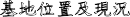
基地位置及現況
本案基地位於台中巿霧噪區，基地面積約為 1036.8 平方公尺，建築面積約為
1036.8 平方公尺。
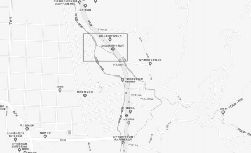
基地位置圖
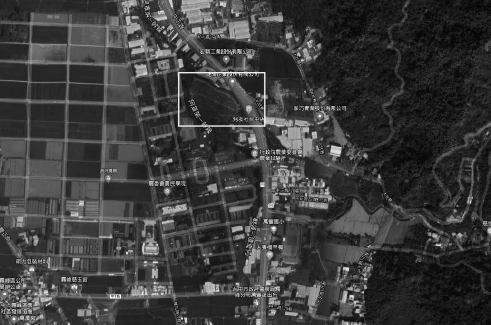
基地現況圖
建築設計基本說明
本案為地上一層温室 位於台中巿霧喙區 總樓地板面積約為 1036.8 平方公尺。
本建物樓高為 6.3 公尺 為結構型塑膠布温室。
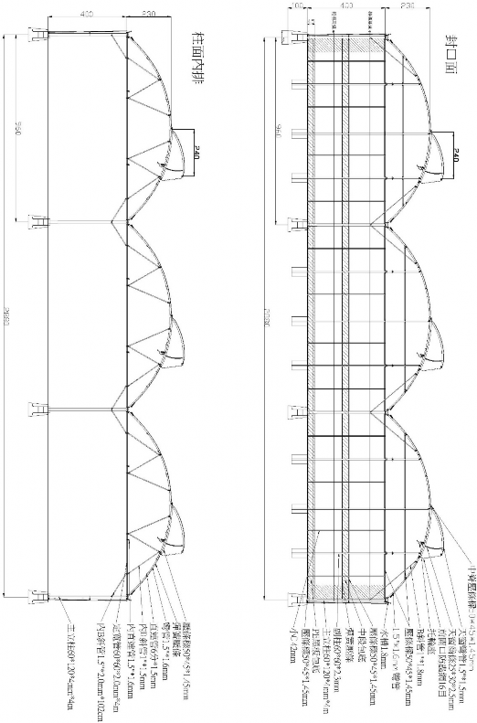
温室構造立面圖
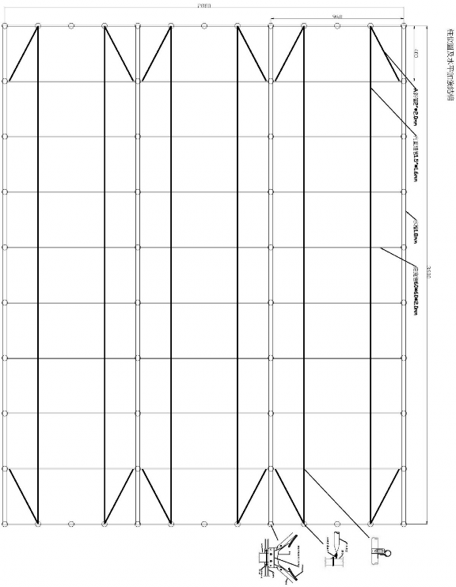
溫室平面圖
結構系統說明
本結構採用具對角斜撐輕銅架結構 樓高為 6.3 公尺。

設計載重
結構體之重量由程式 行計算 設計載重以線載重紇加於屋項。載重如下：
額外靜載重
植 物 盆 栽 15.0 kg/m2
總 重 15.0 kg/m2
(註：植物盆栽大小不一 上方載重有增減之
疑慮 分析時採寬度 1m 做分析)
活載重

LL( 紇 工 臨 時 載 重 ) 30.0 kg/m2
LLr ( 雨 水 載 重 ) 10.0 kg/m2
總 重 30.0 kg/m2
(註：雨天不紇工或維修 故活載重取 30kg/m2)
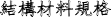
結構材料規格
型銅
降 伏 強 度 Fy� 2500 kgf/cm2
型銅尺寸(單位：mm)
方型管 | 口-60×120×4 |
方型管 | 口-60×60×2.3 |
C 型銅 | C-50×45×1.45 |
囿 管 | O1.5'×1.6 |
囿 管 | O1'×1.5 |
特殊水槽 | 1.8 |
設計法規
設計規範
最新建築技術規則，民國 102 年版
建築物耐震設計規範及解說，內政部，民國 100 年版
建築物耐風設計規範及解說，內政部，民國 103 年版
鋼結構容許應力設計法規範及解說，內政部，民國 99 年版
鋼結構極限強度設計法規範及解說，內政部，民國 99 年版
鋼構造建築物紇工規範，內政部，民國 96 年版
冷軋型鋼構造建築物結構設計規範及解說，內政部，民國 105 年版
建築物基礎構造設計規範，內政部，民國 90 年 10 月
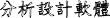
分析設計軟體
CSI-ETABS Version 9.7.4 結構分析程式。
結構分析模擬
分析設計軟體 CSI-ETABS 結構分析程式，Structure Analysis Program， Version 9.7.4。
不、柱以 Frame Element 模擬。
外加靜載重以面載重紇加於屋項元素。
分析時考慮 P-6.效應。
分析載重名稱定義
DL 靜 載 重
SDL 額 外 靜 載 重
LL 活 載 重
LLr 雨 水 載 重
WXX X 向 側 向 風 壓
WYY Y 向 側 向 風 壓
WRC 屋 項 風 壓 力
WRT 屋 項 風 拉 力
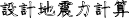
設計地震力計算
建物重量
鋼 構 柱 重 ( 所 有 桿 件 ) 1333 (kgf)
鋼 構 不 重 ( 所 有 桿 件 ) 2402 (kgf)
其 他 重 量 ( 盆 栽 重 量 ) 3888 (kgf)
總 重 量 7623 (kgf)
地震力計算
水平地震力計算
基本資料
基地位置 | 地盤分類 | 用途係數l |
台中巿霧喙區 | 第一類地盤 | 1.00 |
結構系統 | 構造型式 | 設計方法 |
結構型塑膠布温室 | 具對角斜撐輕構架 | 強度設計法 |
超始降伏地震力放大係數y | 韌性容量R | 樓高Hn(m) |
1.0 | 2.4 | 6.30 |
斷層名稱 |
斷層(1) |
距斷層距離(km) |
0.61 |
VS30 |
347.2 |
近斷層工址水平譜加速度係數
SD S | SD 1 | SM S | SM 1 |
0.80 | 0.45 | 1.00 | 0.55 |
近斷層調整因子
NA | NV | NA | NV |
1.000 | 1.000 | 1.000 | 1.000 |
SD SNA | SD 1NV | SM SNA | SM 1NV |
0.800 | 0.450 | 1.000 | 0.550 |
工址放大係數
Fa | Fv | Fa | Fv | ||
1.00 | 1.00 | 1.00 | 1.00 | ||
D SDS=FaS SNA | D SD1=FvS 1NV | M SMS=FaS SNA | SM1=FvSM1NV | T0D | T0M |
0.800 | 0.450 | 1.000 | 0.550 | 0.563 | 0.550 |

建築物基本水平振動週期
方向 | 基本週期 | 經驗週期係數 | Tc | 1.4Tc | 計算地震力週期 |
X向 | 0.849 | Tc= 0.085Hn~0.75 | 0.338 | 0.473 | 0.473 |
Y向 | 0.396 | Tc= 0.085Hn~0.75 | 0.338 | 0.473 | 0.396 |
S A V A
其中 我國耐震設計規範中提及近斷層區域之震區 採用規範計算方式計算 SD 時 不需考慮近斷層調整因子 N 與 N 之放大效應 即取 N 與 NV 等於 1。
T
Fu
Ty
Fuy
Tx
Fux
0
0.00
1.00
0.396
0
0.473
0
0.2T0
0.11
1.69
0.396
1.756
0.473
1.838
0.6T0
0.34
1.69
T0
0.56
1.93
6
6.00
1.93
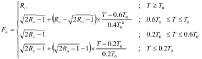
Tx
結 構 系 統 水 平 地 震 力 折 減 係 數 Fu 及 FuM a. 結 構 系 統 容 許 韌 性 容 量 Ra=1+(R-1)/1.5= 1.93
00 | 0 396 | ||||
2T | . | .69 | 0 39 | 0 473 | 1 83 |
0 6T | 0 34 | ||||
6 00 | 93 | ||||
方向 | 0.2T0D | 0.6T0D | T0D | T | Fu |
X向 | 0.113 | 0.338 | 0.563 | 0.473 | 1.838 |
Y向 | 0.113 | 0.338 | 0.563 | 0.396 | 1.756 |
b.結構系統韌性容量 | R | 2.40 | |||
Tx | |||||
0 00 | 00 | 0 396 | |||
2T0 0 11 | 1 95 | 0 396 | 2 08 | 0 473 | 2 24 |
0 6T 0 33 | |||||
55 | |||||
6 00 | 2 40 | ||||
方向 | 0.2T0 | 0.6T0 | T0 | T | Fu |
X向 | 0.110 | 0.330 | 0.550 | 0.473 | 2.243 |
T
Fu
Ty
Fuy
Tx
Fux
0
0.00
1.00
0.396
0
0.473
0
0.2T0
0.11
1.95
0.396
2.085
0.473
2.243
0.6T0
0.33
1.95
T0
0.55
2.40
6
6.00
2.40
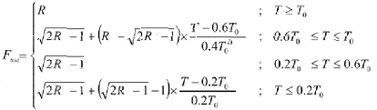
近斷層工址設汁水平加速度反應譜係數
較短週期 | 短週期 | 中週期 | 長週期 | |||
T0.2T0D | 0.2T0DTT0D | T0D<T2.5T0D | 2.5T0D<T | |||
D D 0.4 3T T0 | D D | D D T0D T | D 0.4 D | |||
方向 | 0.2T0D | T0D | 2.5T0D | T | D | D |
X向 | 0.113 | 0.563 | 1.406 | 0.473 | 0.800 | 0.800 |
Y向 | 0.113 | 0.563 | 1.406 | 0.396 | 0.800 | 0.800 |
近斷層工址最大考量水平加速度反應譜係數
較短週期 | 短週期 | 中週期 | 長週期 | |||
T0.2T0 | 0.2T0TT0 | T0<T2.5T0 | 2.5T0<T | |||
0.4 3T T0 |
| T0 T | 0.4 | |||
方向 | 0.2T0 | T0 | 2.5T0 | T |
|
|
X向 | 0.110 | 0.550 | 1.375 | 0.473 | 1.000 | 1.000 |
Y向 | 0.110 | 0.550 | 1.375 | 0.396 | 1.000 | 1.000 |
修 正 之 D Fu m
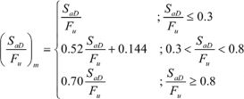
方向 | D | Fu | D Fu | D Fu m |
X向 | 0.800 | 1.838 | 0.435 | 0.370 |
Y向 | 0.800 | 1.756 | 0.456 | 0.381 |
修正之(SaMIFuM)m
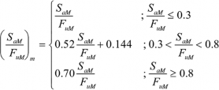
方向 | SaM | FuM | SaMIFuM | (SaMIFuM)m |
X向 | 1.000 | 2.243 | 0.446 | 0.376 |
Y向 | 1.000 | 2.085 | 0.480 | 0.393 |
最小設計水平總橫力
�
���
�������
�� = �
�
方向 | I | y | (SaDIFu)m | d |
X向 | 1.000 | 1.000 | 0.370 | 0.265W |
Y向 | 1.000 | 1.000 | 0.381 | 0.272W |
� ��
���
�������
中小度水平地震力
�� = �
�
方向 | I | y | Fu | (SaDIFu)m | * |
X向 | 1.000 | 1.000 | 1.838 | 0.370 | 0.162W |
Y向 | 1.000 | 1.000 | 1.756 | 0.381 | 0.159W |
最大考量水平地震力
�
���
����� ���
�� = �
�
方向 | I | y | (SaMIFuM)m | M |
X向 | 1.000 | 1.000 | 0.376 | 0.268W |
Y向 | 1.000 | 1.000 | 0.393 | 0.281W |

設計水平地震力
方向 | d | * | M |
|
X向 | 0.265W | 0.162W | 0.268W | 0.268W |
Y向 | 0.272W | 0.159W | 0.281W | 0.281W |
地震力計算 = 0.281 * 7623 = 2142 kgf
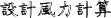
設計風力計算
依據建築物耐風設計規範(內政部 103 年)計算。
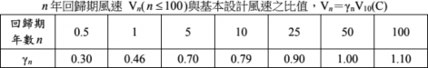
温室種類 | 標準使用年限(年) | rn |
結構型玻璃温室 結構型硬質塑膠板温室 | 20 | 0.89 |
結構型塑膠布温室 | 15 | 0.85 |
簡易錏管塑膠布温 室 | 8 | 0.77 |
本案為結構型塑膠布温室 風力計算採用 15 年回歸其之 10 分鐘平均風速 計算如下:
基本設計風速台中巿霧咋區 V10(C)=27.5 m/s 設計風力為 10 級
建 物 基 本 資 料
本案設計風速為 Vn = 汀n * V10(C) = 0.85 * 27.5 = 23.375 m/s (9 級風力)地況類型 地況B
城巿 | 台中巿 | |
區域 | 霧咋區 | |
15年rnV10(C)= | 23.375 | |
地況 | B | |
a | 0.25 | |
zg(m) | 400 | |
b | 0.62 | |
c | 0.30 | |
l(m) | 98 | |
e | 0.33 | |
zmin(m) | 9 | |
B= | 28.8 | |
L= | 36 | |
h= | 6.3 | |
0(rad )= | 25.6 | |
建築物型態 | 封閉式建築 |
O 計 風 力 計 算
q(z)=0.06k(z) kzt [r n v lO(c) ] 2
1.風速壓
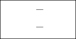
zg
2.774 ( 5 )2 z � 5m.
2.774 ( z ) z 5m.
g
K (z) :
z 2
a.風速壓地況係數
K(z)= 0.14 *z-2a
K( )= 0.35
K(5)= 0.31
b.地形係數
Kzt= 1
q(z)= 3.68 *z-2a
q( )= 9.24
q(5)= 8.24
2.陣風反應因子
gQ=gv= 3.40
Lz
z
= 9.00
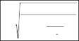
1
1 0.63( B h)0.63
Lz
Q
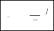
z
1 6
10
I c( )
z
= 94.65
Q= 0.86 lz= 0.3053
1.88
G= ( 普 通 建 築 物 可 取 1.88)
3 設計風壓 (kgf/m2)
F = q zAc GCp
封閉式構架(地形C)
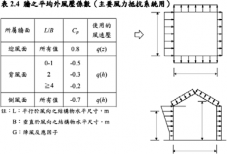
B
L
Z
h
q(zAc)= 19 12 kgf/m2
牆之風壓 | |||||
迎風面 | 背風面 | 側風面 | |||
Cp | F (kgf/m2) | Cp | F (kgf/m2) | Cp | F (kgf/m2) |
0 8 | 28 76 | -0 50 | -17 97 | -0 70 | -25 16 |
拱形屋項之風壓 | |||||
迎風面 | 中央部分 | 背風面 | |||
Cp | F (kgf/m2) | Cp | F (kgf/m2) | Cp | F (kgf/m2) |
0 0594 | 2 14 | -0 88 | -31 64 | -0 50 | -17 97 |
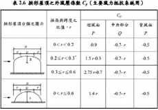
28 76 kgf/m2
側向最大設計風壓(拉)力
L
屋項最大設計風拉力 | 屋項最大設計風壓力 |
-31 64 kgf/m2 | 2 14 kgf/m2 |
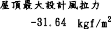
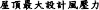
以側向最大設計風壓力計元(短邊 B=28.8m)風壓力
= 28.76*(28.8*4+3/2*汪*2.3*4.8) = 4809.38 (kgf) > 2142.19 (kgf)
得知設計風壓力大於地震力，故本案以風力做為設計考量。
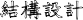
本案採用極限設計法設計。
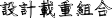
設計載重維合
2.1
規範規定的載種維合如下所示：
(1). 1.4DL
(2). 1.2DL+1.6LL
(3). 1.2DL+0.5LL±1.6WL
(4). 0.9DL±1.6WL
(5). 1.2DL+0.5LL±E
(6). 0.9DL±E
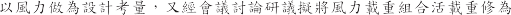
LLr 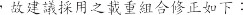 (1). 1.4DL
(2). 1.2DL+1.6LL
(3). 1.2DL+0.5LLr±1.6WXX
(4). 1.2DL+0.5LLr±1.6WYY
(5). 1.2DL+0.5LLr+1.6WRC
(6). 1.2DL-1.6WRT
(7). 0.9DL±1.6WXX
(8). 0.9DL±1.6WYY
(9). 0.9DL+1.6WRC
(10). 0.9DL-1.6WRT
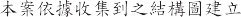 3D 2.1
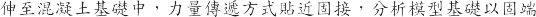
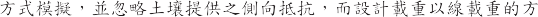
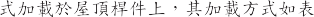 2.1
圖附錄-1
靜載重 |
|
活載重 |
|
X 向側向風力 |
Y 向側風力 |
勻溫室安全構造手冊
屋項風壓力
屋項風升力 |
表附錄-1
分析模型各加載載重分佈情況
溫室結構分析結果
2.2.2
柱檢核
樓層 柱編號 斷面 載重 別 軸彎應力 軸應力 主軸彎應力 軸彎應力 載重 別 主軸剪應力 載重 別
軸剪應力
Story | ColLine | SecID | PMMCombo | PMMRatio | PRatio | MMa」Ratio | MMinRatio | VMa」Combo | VMa」Ratio | VMinCombo | VMinRatio |
RF | C7 | VC | COMB (C) | 0 39 | 0 019 | 0 21 | 0 | COMB3 | 0 0 2 | COMB6 | 0 00 |
RF | C11 | VC | COMB (C) | 0 59 | 0 019 | 0 | 0 | COMB3 | 0 0 3 | COMB5 | 0 00 |
RF | C12 1 | VC | COMB3(C) | 0 311 | 0 015 | 0 288 | 0 007 | COMB3 | 0 0 9 | COMB6 | 0 005 |
(由於資科量過大內容過於冗長 僅頻示局部)
樑檢核
0 678
0 01
0 692
COMB6(T)
B1F
B72
1F
COMB8
0 051
COMB6
0 719
0 012
0 732
COMB5(C)
B1F
B72
1F
0 678
0 01
0 692
COMB6(T)
B1F
B69
1F
COMB8
0 051
COMB6
0 719
0 012
0 732
COMB5(C)
B1F
B69
1F
0 678
0 01
0 692
COMB5(T)
B1F
B66
1F
COMB8
0 051
COMB5
0 719
0 012
0 732
COMB6(C)
B1F
B66
1F
VMinCombo
VMa」Ratio
VMa」Combo
MMa」Ratio
PRatio
PMMRatio
PMMCombo
SecID
BayID
Story
樓層 梁編號 斷面 載重 別 彎應力 軸應力 主軸彎應力 載重 別 主軸剪應力載重 別
…
(由於資科量過大內容過於冗長 僅頻示局部)
斜撐檢核
樓層 斜撐編號 斷面 載重 別 彎應力 軸應力 主軸彎應力 載重 別 主軸剪應力載重 別
Story | BayID | SecID | PMMCombo | PMMRatio | PRatio | MMa」Ratio | VMa」Combo | VMa」Ratio | VMinCombo |
RF | D518 | IB | COMB6(C) | 0 555 | 0 538 | 0 017 | COMB1 | 0 001 | COMB8 |
RF | D518 | IB | COMB5(T) | 0 051 | 0 032 | 0 019 | |||
RF | D519 | IB | COMB5(C) | 0 072 | 0 053 | 0 019 | COMB1 | 0 001 | COMB8 |
RF | D519 | IB | COMB7(T) | 0 05 | 0 035 | 0 019 | |||
RF | D522 | IB | COMB6(C) | 0 079 | 0 06 | 0 019 | COMB1 | 0 001 | COMB8 |
RF | D522 | IB | COMB7(T) | 0 06 | 0 0 | 0 019 | |||
RF | D523 | IB | COMB5(C) | 0 89 | 0 877 | 0 017 | COMB1 | 0 001 | COMB8 |
RF | D523 | IB | COMB6(T) | 0 06 | 0 0 | 0 019 |
…
(由於資科量過大內容過於冗長 僅頻示局部)
溫室安全構造手冊
接合檢核
(須檢附符合「鋼結構極限設計法規範及解說」接合檢核之資杜。)
基礎檢核
(須檢附符合「建築物基礎構造設計規範」基礎檢核之資杜。)